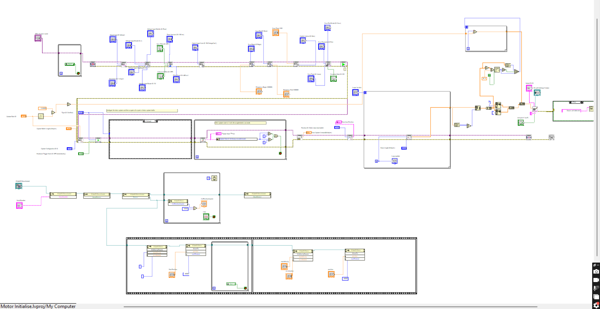
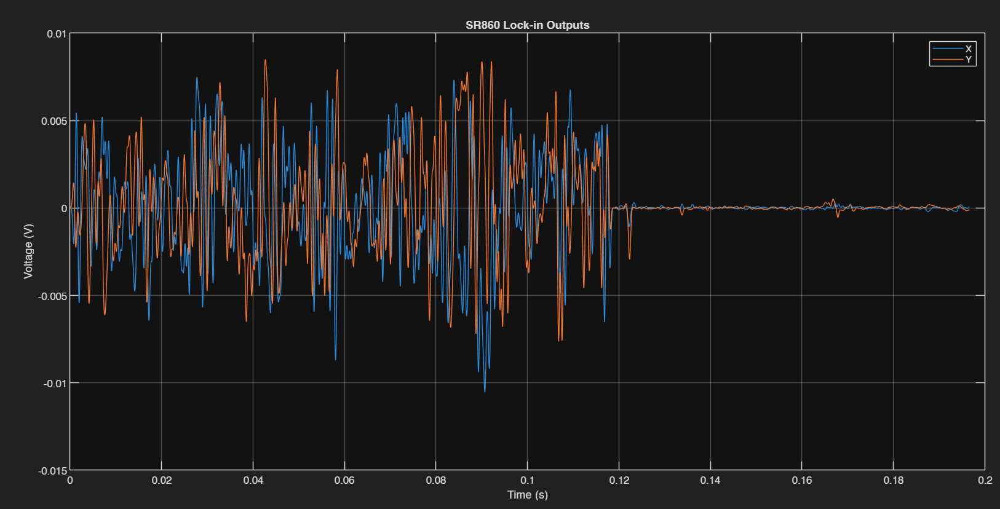
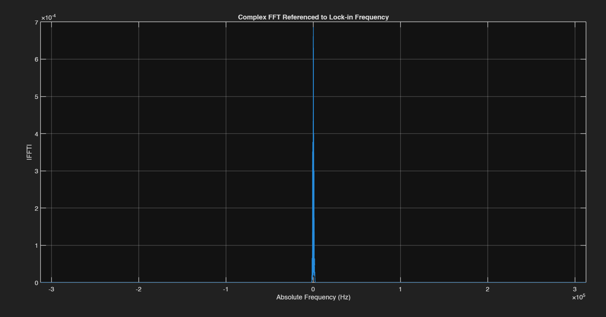

2026 · RESEARCH · OPTICS · LABVIEW · MATLAB · COMPLETED
Microheater Optics Experiment
Experimental investigation of optical signals generated by a microheater using optical instrumentation, a lock-in amplifier, LabVIEW, and MATLAB.
Overview
This project investigated signals from a microheater and diode laser. I explored methods for measuring and analyzing weak experimental signals using a self-edited LabVIEW VI made to capture buffer large amount of data. The LabVIEW VI was built to start the motor at some position and initialize the Lock-in Amplifier (SR860). When motor reaches the start, the Lock-in Amplifier starts capturing as the lens moves for the light to hit a interferometer which outputs a signal. The Lock-in Amplifier clears the noise and isolates the signal. The captured data is then used to create an FFT using MATLAB.
Experimental Setup
The experiment combined optical instrumentation, a microheater, a lock-in amplifier, and laboratory measurement equipment.

Data Acquisitions
LabVIEW was used to acquire and record measurements from the experimental instrumentation. The VI controls both the servo motor that rotates a lens so the light hits the interferometer, and the capture function of the lock-in amplifier. First, the motor is initialized to the set position, velocity, and acceleration it is supposed to run at during testing. At the same time, the lock-in amplifier's signal processing and capture settings are set. Once the user presses start, the servo motor starts running and the lock-in amplifier starts scanning and capturing. When the scan time is over, LabVIEW uses the lock-in amplifier's capture buffer feature to string together all the data captured over the scan and outputs it as a CSV file of the test data.


MATLAB Analysis
MATLAB was then used to process the acquired data and investigate the optical signal response. Because the lock-in amplifier already cleans up the signal coming into it, an FFT of its output on its own shows just one peak at 0 Hz. To see the actual frequency response, we brought the reference signal into MATLAB and used it to demodulate the data, so the FFT shows the signal clearly relative to the reference signal.


Outcome
This project is complete. Both the LabVIEW data collection system and the MATLAB signal processing were finished, and the captured data was used to produce FFTs of the measured optical signal from the microheater.